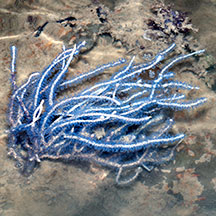
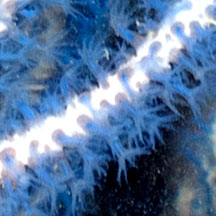
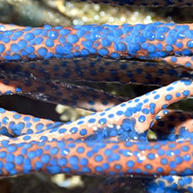

|
|
| gorgonian text index | photo index |
| Phylum Cnidaria > Class Anthozoa > Subclass Alcyonaria/Octocorallia > Order Gorgonacea |
| Blue
sea fan awaiting identification updated May 2025 Where seen? This sea fan with bright blue polyps is sometimes seen on our Northern shores. On rocks and coral rubble near the low water mark. Features: 15-20cm tall. Colony with long stems without much side branching. Stem white or pinkish, cylindrical with rounded tips, all stems about the same diameter. Bright blue polyps are relatively large (0.5cm) and emerge all around the stem. The polyp can retract completely into the stem, leaving a blue spot on the stem. |
|
 Changi, May 06 |
 Polyps fully retracted into the stem. |
 Polyps fully retracted into the stem. |
*Species are difficult to positively identify without close examination.
On this website, they are grouped by external features for convenience of display
| Blue sea fans on Singapore shores |
On wildsingapore
flickr
|
| Other sightings on Singapore shores |